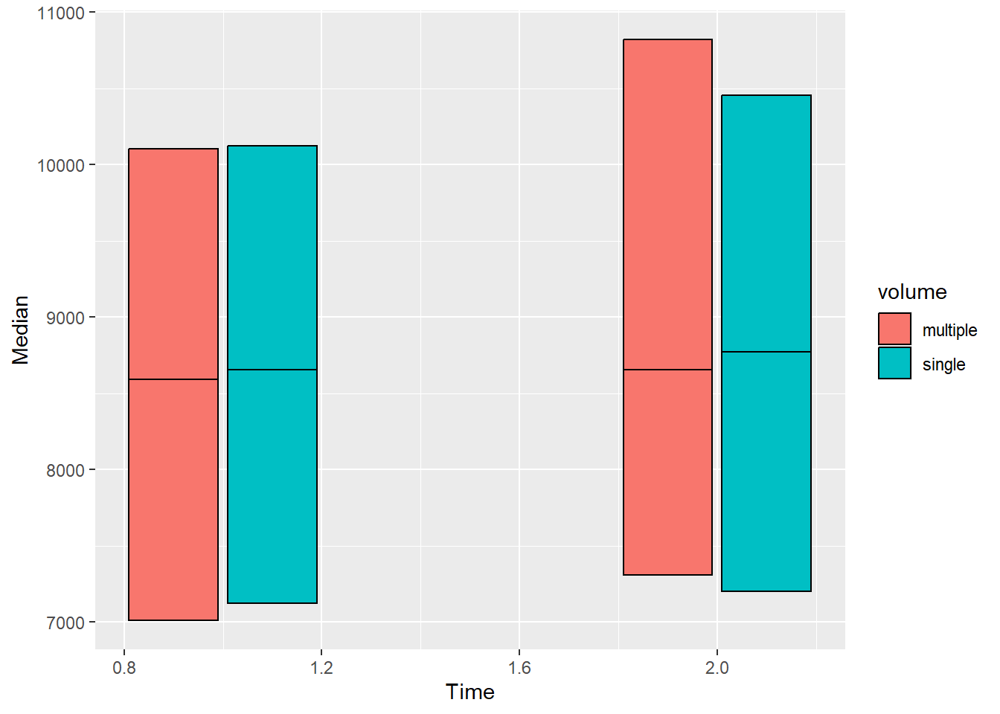
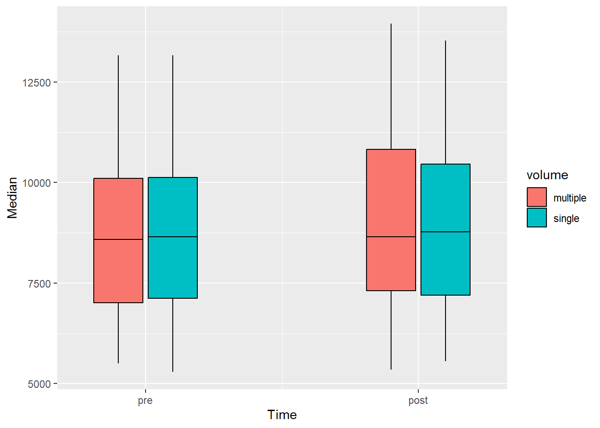
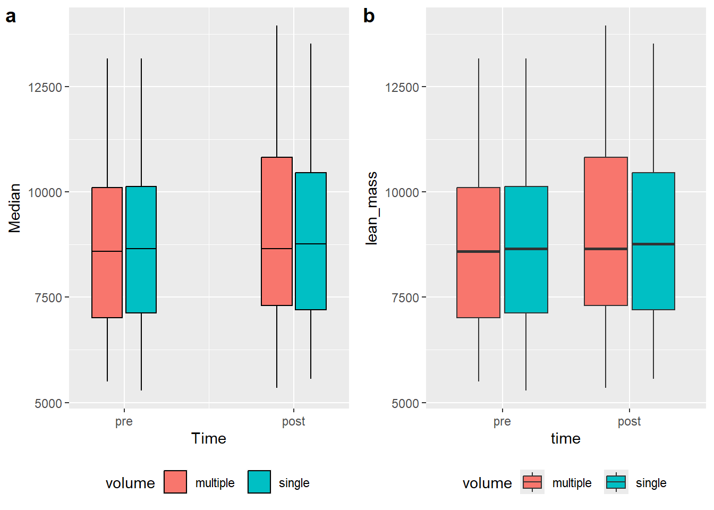
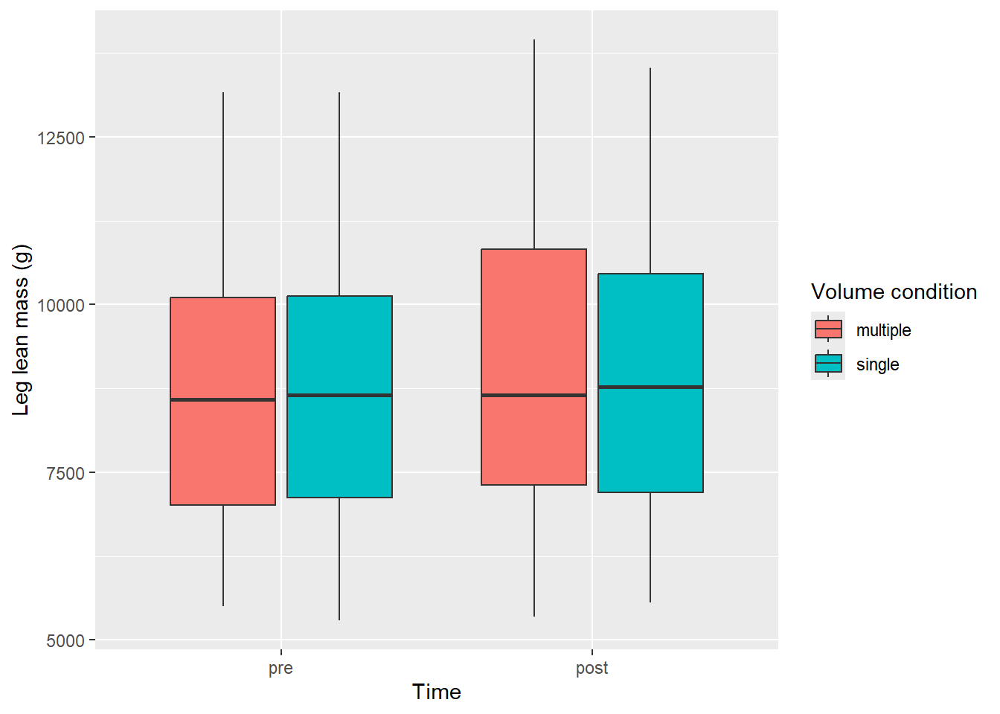
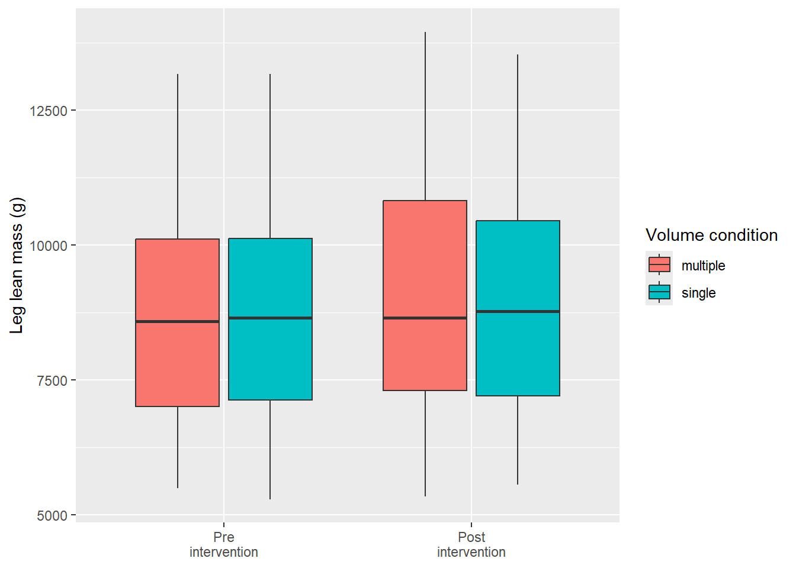
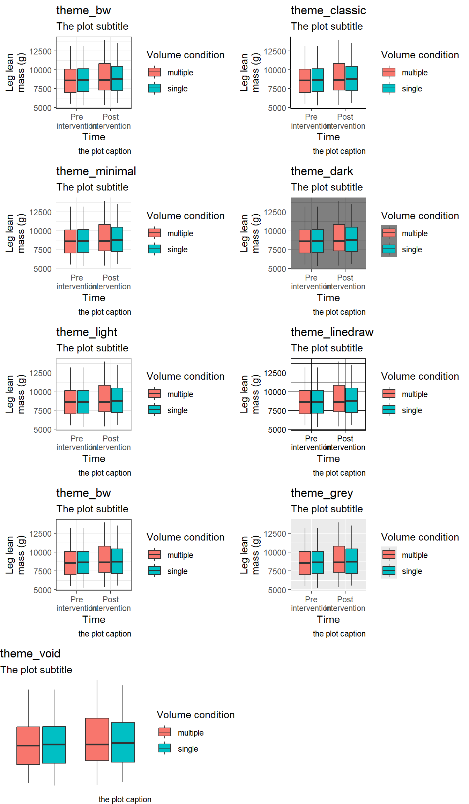

As hinted above, ggplot2 presents us with almost endless opportunities for graphical representations of our data. We will use the data we have wrangled above to better understand the ggplot2 syntax.
In our summary of the lean mass data we have calculated a number of summary statistics that can be used to create a type of range-quartile-median plot not unlike the plots suggested by Tukey1. We will use time as a categorical variable on the x-axis and our summary statistics displayed on the y-axis.
We have specified a data set, and variables for the x and y axis. This specification gives us an empty coordinate system. We need to add geometric objects to represent the data mapped to x and y coordinates. Let’s start simple
The points now represents our median values per time point. There are a number of geometric objects, or geoms in ggplot2. You are also able to extend ggplot2 by creating your own geoms, this has been done in many packages to make a specific geometric available. In ggplot2 there are about 50 geoms available and in addition, a number of statistical transformations2.
In our plot in the making, instead of points we may add rectangular shapes with a bit of reorganization of the data.
leanmass_sum |>mutate(Time =if_else(time =="pre", 1, 2)) |>ggplot( aes(Time, Median, fill = volume)) +geom_rect(aes(xmin = Time -0.18, xmax = Time +0.18, ymin = Median, ymax = q75), color ="black", position =position_dodge(width =0.4)) +geom_rect(aes(xmin = Time -0.18, xmax = Time +0.18, ymin = q25, ymax = Median), color ="black", position =position_dodge(width =0.4))

We have hacked our way to a plot showing the median as a line inside a box covering the interquartile range. Let’s add bars representing the minimum and maximum values. Note that we are using layers and we want our range bars to not over plot the boxes. We must therefore add them prior to the boxes. We will also scale the x-axis and add labels.
leanmass_sum |>mutate(Time =if_else(time =="pre", 1, 2)) |>ggplot( aes(Time, Median, fill = volume)) +geom_errorbar(aes(ymin = Min, ymax = Max), position =position_dodge(width =0.4), width =0) +geom_rect(aes(xmin = Time -0.18, xmax = Time +0.18, ymin = Median, ymax = q75), color ="black", position =position_dodge(width =0.4)) +geom_rect(aes(xmin = Time -0.18, xmax = Time +0.18, ymin = q25, ymax = Median), color ="black", position =position_dodge(width =0.4)) +scale_x_continuous(limits =c(0.75, 2.25), breaks =c(1, 2), labels =c("pre", "post"))

Do not bother creating the above figure! This is an example of the flexibility brought to us by using a set of simple geometric objects. There are shortcuts to the above plot that takes care of a couple of default operations. We need our data prior to being summarized with additional preparatory steps:
The new plot is a box-plot showing the same statistical transformations that we made by hand using a categorical x-axis with the time-values sorted as a factor.
Code producing the figure
a <- leanmass_sum |>mutate(Time =if_else(time =="pre", 1, 2)) |>ggplot( aes(Time, Median, fill = volume)) +geom_errorbar(aes(ymin = Min, ymax = Max), position =position_dodge(width =0.4), width =0) +geom_rect(aes(xmin = Time -0.18, xmax = Time +0.18, ymin = Median, ymax = q75), color ="black", position =position_dodge(width =0.4)) +geom_rect(aes(xmin = Time -0.18, xmax = Time +0.18, ymin = q25, ymax = Median), color ="black", position =position_dodge(width =0.4)) +scale_x_continuous(limits =c(0.75, 2.25), breaks =c(1, 2), labels =c("pre", "post")) +theme(legend.position ="bottom")b <- leg_leanmass |>filter(include !="excl") |>mutate(time =factor(time, levels =c("pre", "post"))) |>ggplot(aes(time, lean_mass, fill = volume)) +geom_boxplot() +theme(legend.position ="bottom")plot_grid(a, b, labels =c("a", "b"), ncol =2)

A direct comparison between (a) manual statistical summaries (transformations) and built in transformations in ggplot2 (b).
We have seen that ggplot2 have some built in features that makes statistical transformation, but also that a similar result can be obtained by using other “geoms” such as geom_rect. Again, this allows for flexible creation of data visualizations.
3.0.1 Labels and themes
So far we have used the available data to determine what is being represented in the figure. To make the figure closer to “publication ready” we would want to take control over labels, colors and shapes that so far are presented with variable names and default settings.
The labs function adds customized labels to a ggplot. All aesthetic mappings are available for labeling. We will go further with the box-plot which uses x, y and fill as aesthetics mapped to data.
leg_leanmass |>filter(include !="excl") |>mutate(time =factor(time, levels =c("pre", "post"))) |>ggplot(aes(time, lean_mass, fill = volume)) +geom_boxplot() +labs(x ="Time", y ="Leg lean mass (g)", fill ="Volume condition")

Additionally, we might want to think about if we need all axis labels. The time variable is specified with pre and post and won’t need a overall axis label. Instead we might want to clean up the axis text. Since this is a data-driven element in our figure we can change it’s behavior prior to plotting. We have already changed the order of the factor, let’s add labels to each level and remove the overall Time label.
leg_leanmass |>filter(include !="excl") |>mutate(time =factor(time, levels =c("pre", "post"), labels =c("Pre\nintervention", "Post\nintervention"))) |>ggplot(aes(time, lean_mass, fill = volume)) +geom_boxplot() +labs(x ="Time", y ="Leg lean mass (g)", fill ="Volume condition") +theme(axis.title.x =element_blank())
Notice that we removed the “Time” label from the figure by removing it in the theme function (theme(axis.title.x = element_blank()); more about that later). The factor variable time was re-specified using the factor function. This function takes a character or factor variable and specifies levels (the order of factors) and optionally, labels for each level.
An alternative approach to changing the labels of the factor is to include labels in a call to scale_x_discrete.
leg_leanmass |>filter(include !="excl") |>mutate(time =factor(time, levels =c("pre", "post"))) |>ggplot(aes(time, lean_mass, fill = volume)) +geom_boxplot() +labs(x ="Time", y ="Leg lean mass (g)", fill ="Volume condition") +scale_x_discrete(labels =c("Pre\nintervention", "Post\nintervention")) +theme(axis.title.x =element_blank())

3.0.1.1 Theming
ggplot2 has a very flexible system for changing parts of a figure that are not directly connected to the data (i.e. created from aesthetic mapping). Each element in the theme that can be controlled is listed in the help pages for theme, type ?theme in your console to access it.
The below illustrates some of the main components we might want to consider:
Each element of the theme can be modified with an element function. The theme element axis.title is a text element and must subsequently be modified with element_text(). This function takes a number of arguments making it possible to modify text components. Below we use our basic plot and to modify the y axis title.
The element axis.title.y is similar to axis.title.x and if we want we could use axis.title to modify both for common attributes. Notice also that we have changed multiple numbers that have defaults. The size is the size of the text, hjust and vjust controls horizontal and vertical placement, receptively.angle rotates the text and lineheight controls the distance between lines (we have used \n to indicate a new line in the title).
Similarly to element_text, element_rect contains argument to control rectangular elements and element_line is used to control lines. element_blank is used to remove an element, we already used this above to remove the x axis title. In the same “family” of function we find margin which can specify margins of theme elements.
In addition to controlling specific elements of a theme we have the option to use ready made themes. A couple of pre-specified themes are shipped with ggplot2 (see Figure 3.1)
Code producing the figure
p <- leg_leanmass |>filter(include !="excl") |>mutate(time =factor(time, levels =c("pre", "post"))) |>ggplot(aes(time, lean_mass, fill = volume)) +geom_boxplot() +labs(x ="Time", y ="Leg lean\nmass (g)", fill ="Volume condition", subtitle ="The plot subtitle", caption ="the plot caption") +scale_x_discrete(labels =c("Pre\nintervention", "Post\nintervention"))plot_grid(p +theme_bw() +labs(title ="theme_bw"), p +theme_classic()+labs(title ="theme_classic"), p +theme_minimal()+labs(title ="theme_minimal"), p +theme_dark()+labs(title ="theme_dark"), p +theme_light()+labs(title ="theme_light"), p +theme_linedraw()+labs(title ="theme_linedraw"), p +theme_bw()+labs(title ="theme_bw"), p +theme_grey()+labs(title ="theme_grey"), p +theme_void()+labs(title ="theme_void"), ncol =2)

Figure 3.1: Examples of themes that are part of ggplot2
Tukey, John Wilder. 1977. Exploratory Data Analysis. Addison-Wesley Series in Behavioral Science. Reading, Mass: Addison-Wesley Pub. Co.
Tukey (1977) is considered to be creator of the box-plot. However, Spear may have suggested a predecessor to the box-plot in Charting statistics (Spear 1952).↩︎
See https://ggplot2.tidyverse.org/reference/ for a complete inventory.↩︎